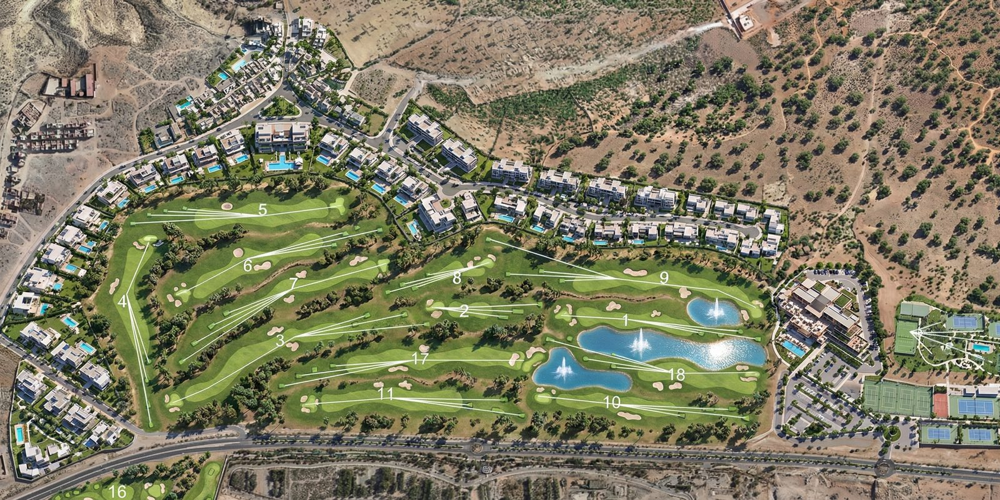

01
ConseilLire le terrain avant de le toucher
Relevés, ressource en eau, orientation des vents dominants, nature des sols, usages futurs. Un diagnostic qui dit ce que le site peut porter — et ce qu'il refusera toujours. Avant le moindre trait, un avis franc sur la faisabilité et sur le budget.